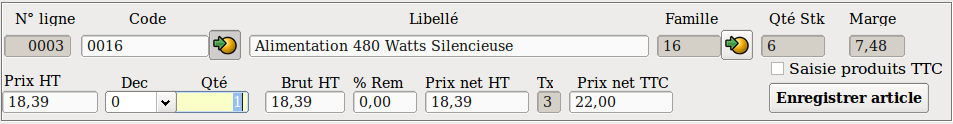
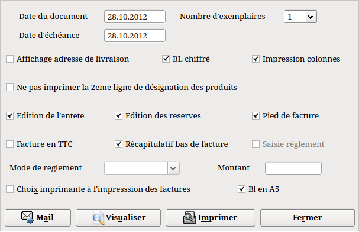

La première
chose à faire avant de saisir quelque chose dans les lignes
de
détail est de selectionner le type de ligne dans le panel
situé en haut à droite de l'écran.
Cliquez sur le
bouton "Mo" pour saisir
la main d'oeuvre, sur le bouton "article"
pour saisir vos articles, ou bien sur le bouton "Commentaire"
afin de saisir vos
libellés.
Après la
saisie du code de la main d'oeuvre l'ensemble des zones est
complétée. Modifier si besoin la
désignation.
Si la zone "
Temps/Montant"
est mouvementée avec un "M" (Montant), la zone "
Tx
Hr" ( Taux horaire) et la
zone "
Tps" (Temps) ne
sont pas modifiables il faut donc saisir ou modifier le montant HT de
l'opération de main d'oeuvre.
Si la zone est
mouvementée avec un "T" (Temps) vous pouvez
modifier la zone "
Tx Hr"
( Taux horaire) et saisir un temps.
Saisir ou modifier le montant HT de
l'opération de main d'oeuvre, eventuellement saisir le
montant
de la remise.
Toutes les zones suivantes sont
modifiables.
Si vous modifez le montant net HT, le
programme vous
demandera si vous souhaitez modifier le montant de la remise ou le
montant HT. La première option ne modifiera que le montant
de la
remise et le montant net TTC, la seconde recalculera le montant du Taux
horaire le montant HT et le montant TTC.
Cliquez sur le bouton "
Enregister
Mo"
pour valider la ligne de main d'oeuvre. La ligne s'inscrit dans la
partie basse de l'écran avec un "M" en bout de ligne (Voir
copie d'écran plus haut).
Saisie
des articles.

Un produit peux être appelé soit par la saisie de sa
référence, soit par la saisie du code équivalent, soit par la saisie
(ou lecture) du code barre.
Dans le cas d'une saisie du code équivalent voir ici la
note sur l'utilisation du code équivalent
Après la
saisie du code de l'article l'ensemble des zones est
complétée. Modifier si besoin la
désignation.
NB : Si le produit appelé possède une photo ou un
texte de caractéristique alors la ligne de désignation sera verte. Il
sera alors possible de faire CTRL+P, lorsque le curseur est soit sur la
zone "Désignation" soit sur la zone "Quantité", pour ouvrir une fenêtre
qui affichera la photo et les caractéristiques du produit.
Toutes les zones suivantes sont
modifiables.
Si vous modifiez le prix unitaire
l'ensemble des autres zones prix est recalculé.
Si vous modifez le montant brut HT, le
programme vous
demandera si vous souhaitez modifier le montant de la remise ou le
montant unitaire. La première option ne modifiera que le
montant de la
remise et le montant net HT et TTC, la seconde recalculera le montant
du Prix unitaire et les deux zones du prix net.
Vous pouvez modifier le nombre de
décimales dont vous voulez disposer en cliquant sur la
texbox "
Dec" ou en tapant "d" en étant dans la zone "
Qté".
Cliquez sur le bouton "
Enregistrer
article"
pour valider la ligne du produit. La ligne s'inscrit dans la
partie basse de l'écran avec un "A en bout de ligne (Voir
copie d'écran plus haut).
Si la gestion du matériel est activée et
si le produit est un matériel, alors une fenêtre s'ouvrira afin de
saisir le ou les numéros de série (selon la quantité recue).
Voir rubrique matériels
Lorsque votre saisie est
terminée, cliquez sur le bouton "
Sortie
de la saisie" pour revenir dans l'écran de
l'entête.
Note
concernant la gestion des remises sur les produits :
Pour les remises par type client.
Si
une remise client existe alors la remise par type ne se fera pas.
La remise client est donc prépondérante.
Pour les remises quantitatives.
Si
une remise client existe alors les remises quantitatives s'ajouteront à
celle-ci.
Si
une
remise par type client existe alors les remises quantitatives
s'ajouteront également a celles-ci.
Les
remises quantitatives s'appliquent donc toujours sur les produits
quelque soient les remises préalables utilisées et sauf si le produit est en promotion.
Rappel. Les remises quantitatives se parametrent
par la
fiche famille, puis, en fiche article, il suffit de cliquer sur le
bouton idione pour importer les remises de la famille.
Note sur le blocage des documents:
On ne peut pas sélectionner un document qui est déjà
utilisé par une autre instance. Si c'est le cas alors on aura un
message d'information qui affichera également le nom de l'utilisateur.
Ca permettra de retrouver facilement le poste qui bloque.
Si un jour il y a un problème pour aller sur un bon
alors que personne n'utilise réellement ce bon alors il faudra aller en
"Gestion" ==> "Outils" ==> "Appel programme" et saisir
"Docactif". Cela effacera la table et libérera le document.
Cela sera notamment utile en cas de crash du programme de facturation
car une sortie anormale du programme ne mettra pas à jour la table.
Impression
des documents.
Comme il a été vu
plus haut, le type
de document se décide en cochant le bouton radio
souhaité
en haut à droite de l'onglet "Entête" .
Tous
ces documents peuvent être
imprimés
autant de fois que vous le souhaitez. Pour les factures archivées, (les
factures sont archivées lors de la clôture mensuelle) il faudra aller
dans les archives pour les réimprimer.
Pour imprimer un document,
cliquez sur le bouton "
Imprimer"
la fenêtre suivante s'ouvre.

Toutes
les valeurs des options
sont celles qui, par défaut, sont mémorisées dans
les préférences. Le nombre d'exemplaires de facture vient de la fiche
client. Cette donnée est modifiable.
La date
proposée est celle du jour de l'impression. Cette date est modifiable.
Si vous
imprimez sur du papier
pré-imprimé veuillez décocher les
boutons "
Edition de l'entete"
et "
Edition des reserves".
Si vous souhaitez un
récapitulatif du total de la MO, des produits et des remises en
bas de facture, cochez le bouton "
Edition
du récapitulatif"
Si vous souhaitez impimer les BL sur du formats A5, il faudra cocher le bouton "
Bl en A5".
Le programme imprimera deux BL réduits sur une feuille A4, un pour le
client et l'autre, signé par le client, pour vous. Cette fonction ne
marche qu'avec les documents de type BL.
Gestion
du réglement : Si le client ne paye pas alors il faudra décocher
le bouton "
Saisie du réglement"
sinon, le bouton devra etre actif pour saisir le montant versé. (Voir les
préférences pour l'activation du bouton par
défaut)
Si le bouton "
Saisie
du réglement"
est activé vous pourrez saisir le mode de réglement et éventuellement
modifier le montant réglé qui, par défaut, est égal au montant de la
facture. Si le bouton "
Saisie du réglement"
n'est pas coché, vous
pourrez néanmoins sélectionner
le mode de réglement afin qu'il apparaisse sur la facture.
Si le texte réglement (dans les
préférences) n'est pas activé et si le mode de réglement est renseigné
dans la fiche du client alors c'est ce mode de réglement qui
s'affichera dans la fenêtre d'impression des factures. Si aucun mode de
réglement n'est renseigné dans la fiche client et que le texte de
réglement soit activé dans les préférences alors c'est celui-ci qui
s'imprimera sur la facture, sinon, le mode réglement de la fiche client
sera prépondérant. Si le texte de réglement par défaut n'est pas activé
dans les préférences et si le mode de réglement n'est pas renseigné
dans la fenêtre d'impression alors on aura la mention normale
(Reglement au jj/mm/aaa).
Laurux peut gérer deux règlements
différents. En cas de règlements multiples, saisir le mode de règlement du
premier règlement, saisir le montant puis cliquer sur le bouton "
Imprimer".
Une fenêtre s'ouvrira afin que vous puissiez saisir le deuxième mode de
règlement. Le montant du deuxième règlement s'affiche automaiquement,
cliquer sur le bouton "
Imprimer".
Dans le cas d'un règlement partiel,
on saisira le mode de règlement puis son montant, puis on cliquera sur le
bouton "
Imprimer". La fenêtre de saisie du
deuxième règlement s'ouvrira mais comme il n'y aura pas de saisie il
faudra cliquer sur le bouton "
Imprimer".
Attention
:
La saisie d'un réglement génère une écriture de trésorerie automatique
dans les journaux définis dans les parametres. Le programme mouvementera
un
journal de caisse si le réglement est en especes sinon il mouvementera
un journal de banque.
Cliquez
sur "
Imprimer"
pour lancer
l'impression ou sur "
Visualiser" pour avoir
un aperçu du document.
Attention ! Si vous imprimez un document de type "F"
( facture ), le document ne sera plus modifiable. Le passage de
l'écriture de vente en comptabilité se fera automatiquement. En
visualisation, il n'y a pas de mouvement comptable, il n'y a que
l'impression qui génère l'écriture de vente.
Le bouton "
Mail" permet l'envoi de courriels si la zone est renseignée.
Le bouton "
Sms" permet l'envoi de SMS si la zone portable est renseignée.
NB : Le bouton "
Sms" apparaît seulement si la gestion des SMS est activée dans les préférences.
Voir la page dédiée à la
Gestion des SMS ou
Utilisation des SMS sous Laurux
Gestion des avoirs et duplication de
documents.
Il existe deux façons de faire un avoir.
1- Manuelle
c'est à dire que l'on va créer un document normal mais on saisira des
quantités négatives. A l'impression de la facture, puisque le montant
est négatif, on aura la mention
"Avoir"
au lieu de
"Facture"
sur le document imprimé. L'écriture passera au crédit du compte client
en compta. Bien entendu on peut panacher des quantités positives et
négatives. Seul le montant final du document determinera la nature du
document.
2- Automatique c'est à dire que
l'on va transformer une facture en un avoir (ou inversement parce que ça fonctionne dans les deux sens).
Pour être transformée en avoir, une facture doit préalablement être
archivée (Rappel : Les factures sont archivées lors de la cloture
mensuelle de la facturation)
A: Saisie
d'un avoir a partir d'une facture archivée
1- Cliquer sur nouveau et choisissez la deuxième option
à la question posée.
2- Cliquer sur le bouton des avoirs et sélectionner la facture qu'on
souhaite transformer en avoir ou inversement l'avoir qu'on souhaite
transformer en facture. C'est magique, ca marche dans les deux sens.
3- Une fenêtre va s'ouvrir et montrer les lignes du
document qu'on vient de choisir.
4- Ici, on a deux possibilités. Soit on veut faire un avoir sur la
totalité du document auquel cas on a rien d'autre à faire qu'a cliquer
sur le bouton "Valider sélection", soit on souhaite faire un avoir
partiel auquel cas on va activer le bouton "Sélection partielle" puis
sélectionner les lignes souhaitées. lorsque la sélection est finie, on
va la valider en cliquant sur le bouton "Valider sélection".
5- La fenêtre des avoirs va se fermer et on va se retrouver dans les
lignes de détails de la facture avec les lignes précédement
sélectionnées. Les quantités étant évidemment inversées.
b: Saisie
d'un avoir a partir d'une facture non archivée
1- Sélectionner la facture a dupliquer.
2- Double-cliquer sur le document sélectionné.
3- On se
retrouve dans la même position que la ligne 3 du pragraphe précédent.
Voir plus haut pour la suite.
NB : Lors du traitement la facture sélectionnée sera archivée.
Création d'un devis par duplication.
Il y a deux manière de dupliquer un document.
A- Depuis le menu de création des avoirs.
1- Cliquer sur nouveau et choisissez la première
option à la question posée. Ensuite la procédure est identique à celle
de la création des avoirs.
2- N'oubliez pas de modifier le code du client, car
c'est celui du document dupliqué qui est récupéré.
NB : Cette option, contrairement aux avoirs qui sont
créés à partir des factures archivées, ne fonctionne qu'avec les
documents en cours.
B- A partir des lignes de détail du document.
Il est possible de dupliquer
directement un document à partir des lignes de détail en faisant CTRL +
D.
Deux possibilités.
1- Si aucune ligne n'est sélectionnée alors le programme proposera une duplication totale.
2- Si des lignes on été
sélectionnées alors le programme proposera une duplication partielle.
NB : Une ligne se sélectionne en
la cliquant pour la mettre en surbrillance puis en pressant la barre
d'espace. Une "*" s'inscrira alors en bout de ligne.
Rappel : Il est possible de
modifier la taille des colonnes. Cela permettra d'afficher la dernière
colonne ("*") au cas ou elle ne soit pas visible. Ces modifications
sont mémorisées à la fermeture de la fenêtre.
La duplication à partir des lignes de
détail va offrir l'avantage d'une gestion des reliquats lorsque le
document a dupliquer est de type "C" (commande).
Si on duplique une commande, après la
duplication le programme demandera si on souhaite supprimer les lignes
dupliquées. Si on est d'accord alors seuls les articles seront
supprimés, les lignes de commentaires et de MO resteront sur le
documents initial.
La première ligne de la commande créée
sera un commentaire de la forme suivante : "Reliquat de la commande
XXXXX" (XXXXX étant le numéro de la commande initiale).
En fin de document initial on aura la
mention ""Pièces en reliquat sur la commande XXXXX" (XXXXX étant le
numéro de la nouvelle commande). Sous cette mention reportera toutes
les lignes des produits portés dans la nouvelle commande.
Gestion des acomptes.
Laurux n'offre pas de possibilité prédéfinie de faire des
factures d'acomptes or la législation impose la saisie d'une facture
pour tout versement d'acompte. Voici comment procéder :
1-
Créer une famille spécifique pour les acomptes avec un compte vente
419xxx puis créer un article acompte ayant un prix de vente à zéro en
veillant a porter la famille acompte.
2- Lors du versement de l'acompte, créer une facture, appeler l'article acompte,saisir son montant et imprimer le document.
3-
Lorsque
le client vient chercher son produit, créer une facture, saisir le
produit (ou la prestation) commandé(e) lors du versement de l'acompte,
appeler le produit acompte et saisir son montant puis mettre
une quantité négative (-1). Imprimer le document.
Archivage des factures.
L'archivage des factures imprimées se fait
automatiquement lors de la clôture mensuelle. Les factures archivées
disparaissent de la facturation, par conséquent il faudra passer par le
menu des archives si on a besoin d'imprimer un ancien document.
On peut aussi, ponctuellement, archiver manuellement
une facture en double-cliquant sur la ligne du document (par exemple
pour faire un avoir automatique).
NB : Les documents de type "
A" ne peuvent pas être archivés, ni manuellement, ni par le programme de clôture mensuelle.
Quelques fonctions.
1- Pour insérer une ligne vierge il faut enregistrer
une ligne de commentaire vide.
Si on utilise souvent des lignes blanches, il serait
mieux de créer un commentaire vierge via la table des commentaires.
2- Pour déplacer une ligne, on la sélectionne puis
on appuie sur la touche - (moins) pour la faire remonter ou sur la
touche + (plus) pour la faire descendre.
3- Pour supprimer une ligne, on la sélectionne puis on
appuie sur la touche Suppr ( ou Del ).
4- Pour modifier une ligne, on double clique dessus.
Le remplacement d'un produit par un autre lors d'une
modification de ligne ne fonctionne que sur la première ligne.
Cela
veut dire que les produits ayant deux lignes de désignation ou
de l'eco-taxe ou de la copie privée ou à fortiori des lignes des
caractéristiques verront seulement la première ligne modifiée. Donc
le plus simple (et le plus sur) c'est, dans ce cas, de supprimer le
produit puis de refaire une nouvelle saisie avec le produit souhaité.
----------------------------------------------------------------------------------------------------------------------
Retour
en haut de la page
Retour a
l'index

 , après sélection, les coordonnées du
client
apparaissent. Si le client n'existe pas vous pouvez le créer
à partir de cet écran en cliquant sur le
bouton " Nouveau client ".
Le code du client est attribué automatiquement par le
programme
et n'est pas modifiable. Saisir ensuite les différentes
données du client qui sera crée lorsque vous
cliquerez
sur le bouton "Bon"
, après sélection, les coordonnées du
client
apparaissent. Si le client n'existe pas vous pouvez le créer
à partir de cet écran en cliquant sur le
bouton " Nouveau client ".
Le code du client est attribué automatiquement par le
programme
et n'est pas modifiable. Saisir ensuite les différentes
données du client qui sera crée lorsque vous
cliquerez
sur le bouton "Bon"